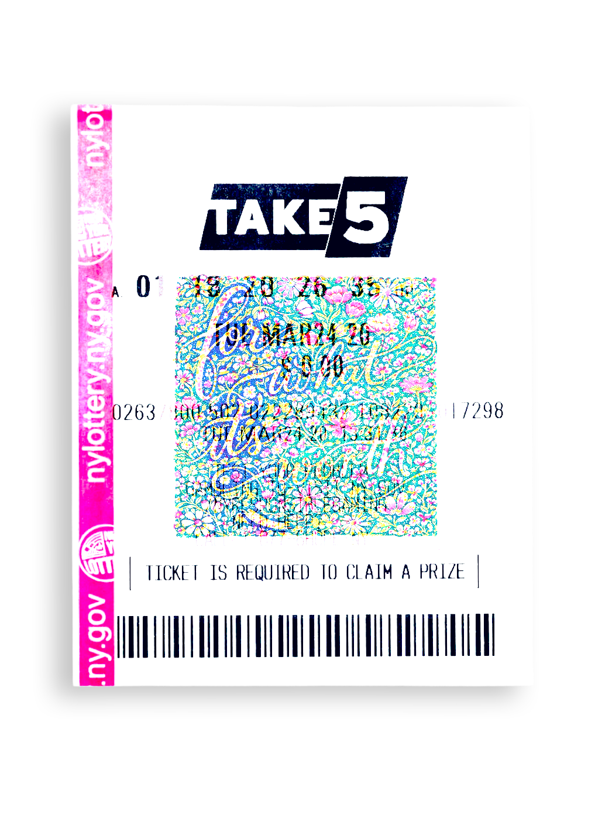

phrase
The moment we decide to not be afraid of our actions & decisions. When we take a step outside the box from our safety net. The courage we take when the outcome isn't guaranteed. When there isn't a define yes or no, is this good or not.
For what it's worth is like investing all your money into a passion project knowing you have no fall back. Or putting all your love into someone who might not withstand time. Or voicing an opinion when there is no need to.
For what it's worth is the gap between what we sacrifice and what we might receive. It's recognizing that sometimes value isn't measured in guaranteed outcomes but in the willingness to risk something precious — our ideas, our vulnerabilities, our hearts — knowing full well they might be dismissed, misunderstood, or broken.
It's knowing nothing is for certain but still making the choice to defy certainty, marking those crossroads where we choose potential meaning over comfortable insignificance.
Click any underlined word in the text to swap it for an alternative. Each click cycles the word to its next meaning and reveals a new image. Explore what changes — and what stays the same.